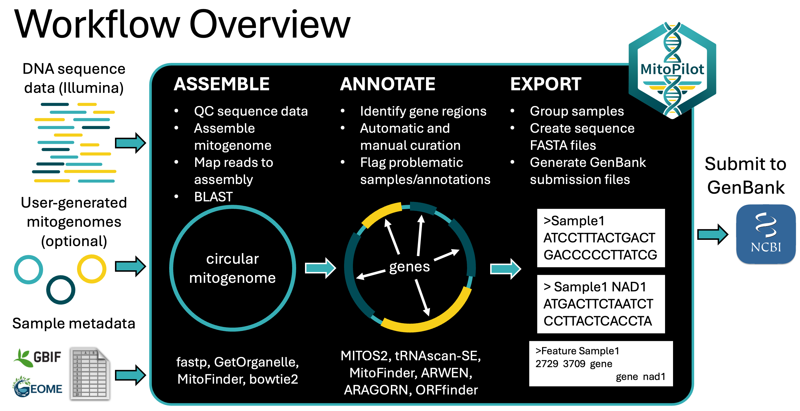

Please see the documentation website for more details.
Overview
MitoPilot is a package for the assembly and annotation of mitochondrial genomess from genome skimming data. The core application consists of a Nextflow pipeline that is wrapped in an R package, which includes an R-Shiny graphical interface to monitor and interact with processing parameters and outputs. Currently the pipeline expects paired-end Illumina reads as the raw input and performs the following steps.
- Mitogenome assembly
- fastp for quality control and adapter trimming
- GetOrganelle (default) or MitoFinder for mitogenome assembly
- bowtie2 for read mapping to calculate coverage and error rates.
- NCBI BLAST remotely fetch closest match from GenBank for automatic and manual curation
- Mitogenome annotation
- MITOS2 for rRNA, PCG, and tRNA annotation
- tRNAscan-SE for tRNA annotation
- ARWEN for tRNA annotation (optional)
- ARAGORN for tRNA annotation (optional)
- ORFfinder identify additional open reading frames (ORFs) (optional)
- Custom scripts for gene boundary refinement and annotation file formatting
- Validation to flag possible issues or known errors that would be rejected by NCBI GenBank
- Manual curation of annotations using the integrated Shiny App
- Data export
- Custom scripts to export data in a format suitable for submission to NCBI GenBank
Optionally, MitoPilot can proceed straight to annotation and curation if the user supplies mitogenome assemblies with the new_project_userAsmb() function.

Taxonomic Scope
MitoPilot was initially built for fish mitogenome assembly. By default, MitoPilot uses included fish reference databases for GetOrganelle and MitoFinder. However, MitoPilot has been developed with modularity and extensibility in mind to facilitate broader application in the future.
MitoPilot allows the user to provide custom reference databases for assembly with GetOrganelle or MitoFinder. The MitoPilot::custom_assembly_db() function can build these databases for a clade automatically, no external tools required. See our documentation for details.
For annotation with MITOS2, we have provided reference databases for chordates and metazoans. You can toggle between these databases in Annotate Opts. window in the MitoPilot GUI. We will add more annotation reference database options in the future.
Currently, MitoPilot has curation/validation rulesets for the following groups of organisms:
- Actinopterygii - Ray-finned fishes
- Asteroidea - Sea stars
- Octocorallia - Octocorals
- Hexacorallia - Hexacorals
- Diptera - True flies
- Testudines - Turtles
- Copepoda - Copepods (testing in progress)
- Ctenophora - Ctenophores (testing in progress)
- Annelida - Annelids (testing in progress)
- Mammalia - Mammals (untested)
- Lepidosauria - Lizards and snakes (untested)
- Aves - Birds (untested)
- Ascidiacea - Sea squirts (untested)
- Bivalvia - Bivalves (untested)
- Bryozoa - Bryozoans (untested)
- Crinoidea - Crinoids (untested)
- Demospongiae - Demosponges (untested)
- Echinoidea - Sea urchins (untested)
- Gastropoda - Gastropods (untested)
- Holothuroidea - Sea cucumbers (untested)
- Homoscleromorpha - Homoscleromorph sponges (untested)
- Malacostraca - Malacostracans (untested)
- Hydrozoa - Hydrozoans (untested)
- Nemertea - Ribbon worms (untested)
- Ophiuroidea - Brittle stars (untested)
- Platyhelminthes - Flatworms (untested)
- Polychaeta - Polychaetes (untested)
- Pycnogonida - Sea spiders (untested)
- Sipuncula - Peanut worms (untested)
- Thaliacea - Salps (untested)
- Thecostraca - Barnacles (untested)
See the curation ruleset browser for a detailed description of each curation ruleset.
The custom logic in the annotation curation and validation scripts needs to be tweaked for optimal performance with other taxonomic groups. All of the curation rulesets are contained in the underlying Docker image (currently hosted at macguigand/MitoPilot). Adding rulesets for new taxa will involve updating the Docker image appropriately and specifying the new image in the Nextflow configuration file.
If you have a group of organisms that you would like to try with MitoPilot, feel free to post an issue or reach out to Dan MacGuigan directly at daniel.macguigan@noaa.gov.
Curation reference databases can be specified independently of the annotation reference databases. We have provided curation databases for chordates and metazoans (RefSeq 89 or RefSeq 231). Users can also provide custom databases to improve the automatic curation step. Additionally, MitoPilot will automatically incorporate the assembly BLAST results into the curation databases.
Installation
We provide detailed installation instructions for the following computing clusters:
To use MitoPilot, you will need R (>=4.4.0) and Nextflow. In addition, depending or where Nextflow will be executing the pipeline (e.g., locally or on a remote cluster), you may also need to install Docker or Singularity.
Once you have R and Nextflow installed, install MitoPilot in R from GitHub:
if (!requireNamespace("BiocManager", quietly = TRUE)) {
install.packages("BiocManager")
}
BiocManager::install("Smithsonian/MitoPilot")Alternatively, you can clone this repository and install the package locally from the project folder:
devtools::install()Usage
MitoPilot includes a set of pre-filtered test data, a function for setting up an example project (new_test_project()), and detailed tutorial documentation. It is highly recommended that you use the test project to ensure successful installation and familiarize yourself with the pipeline before starting a MitoPilot project with your own data.
Initializing A Project
The MitoPilot workflow begins by initializing a new project with the new_project() function (or new_project_userAsmb() if you have already assembled mitogenomes). If running from within RStudio (recommended) a new R-project will also be initialized and opened in a new RStudio session.
MitoPilot::new_project(
path = "path/to/project",
mapping_fn = "path/to/mapping_file.csv",
data_path = "path/to/raw_data",
executor = "local",
ncbi_api_key = "MY_NCBI_API_KEY"
)- Path
- The path specifies where the new project directory will be created. If no path is provided, the project will be created in the current working directory.
- Mapping File
- The mapping file should be in CSV format and must contain the following columns:
-
ID(a unique identifier for each sample) -
R1andR2(specifying the forward and reverse file names for the raw Illumina paired end data) -
Taxon(e.g. species or genus name, no required format)
-
- In addition to the required columns, any other sample metadata can be included in the mapping file. These columns can also be used when exporting files for NCBI GenBank Submissions, so metadata that is important for submission (e.g., BioSample ID) can be included here.
- The mapping file should be in CSV format and must contain the following columns:
- Data Path
- Full path to the data directory, which should contain the raw Illumina paired-end reads specified in the mapping file.
- Executor
The executor specifies where the computational work will be performed by Nextflow. For example choosing
localwill run the pipeline on the local machine, whileawsbatchwill run the pipeline on AWS Batch. Runningnew_project()will generate a executor-specific .config file in the project directory.MitoPilot ships built-in templates for
local,awsbatch, the Smithsonian Hydra cluster (NMNH_Hydra), the NOAA SEDNA cluster (NOAA_SEDNA), and generic schedulers:slurm,sge,pbs, andlsf.-
To run on your own HPC cluster, use
MitoPilot::generate_config()to build a custom configuration. This creates a named profile (partition, account, container engine, etc.) thatnew_project(executor = "<name>")finds automatically:# configure once MitoPilot::generate_config( name = "my_cluster", scheduler = "slurm", queue = "general", account = "my_allocation", container_engine = "apptainer" ) # reuse for any project MitoPilot::new_project(..., executor = "my_cluster") # see all available configs MitoPilot::list_configs() You can also pass a fully custom Nextflow config with
config = "path/to/.config".
- NCBI Api Key
- We highly recommended generating a NCBI API key and providing it here during project initialization. This will increase the efficiency of the remote BLAST search and corresponding GenBank downloads during the Assemble module.
NOTE: If running MitoPilot via RStudio Server on a computing cluster, you likely need to specify Rproj = FALSE when calling the MitoPilot::new_project function.
Initializing a Project with User Assemblies
MitoPilot can initialize a project with user-supplied mitogenome assemblies. This may be helpful if you have existing assemblies and only wish to utilize the annotation and curation features of MitoPilot. Alternatively, you can use this approach to “re-import” assemblies produced by MitoPilot that required manual editing with an external tool.
To use your own mitogenome assemblies, you will need a mapping file with two additional columns:
-
Assembly- Contains the names of your mitogenome FASTA files. Ideally, each FASTA file should contain a single contig or scaffold representing the complete mitogenome. The format of the FASTA file names and sequence headers does not matter.
-
Topology- Indicate whether the assembly is “linear” or “circular”.
All of your mitogenome FASTA files must be located in a single directory, which you will supply to the assembly_path argument of the new_project_userAsmb() function.
MitoPilot::new_project_userAsmb(
path = "path/to/project",
mapping_fn = "path/to/mapping_file.csv",
data_path = "path/to/raw_data",
assembly_path = "path/to/mitogenome/assembly/fasta/files"
executor = "local",
ncbi_api_key = "MY_NCBI_API_KEY"
)Note that all samples in a MitoPilot project created with new_project_userAsmb() must have user-supplied assemblies. You cannot have MitoPilot project with mixed samples (i.e. some assembled, some unassembled).
Nextflow Configuration File
Initializing a new project will populate the .config file in the project directory that may include place holders for important parameters, in the format: <<PARAMETER_NAME>>. For example, all new configuration files will include the line rawDir = '<<RAW_DIR>>', which should be updated to rawDir = '/path/to/your/data' indicating the location of the raw data file specified in the mapping file. The configuration files can also be modified to specify custom docker images for one or more of the processing steps. After initializing a new project you should review the .config file to ensure that all necessary parameters are provided.
Container Cache Directory
MitoPilot runs each processing step inside a container (Docker locally, or Singularity/Apptainer on most HPC clusters). The container image is fairly large, so on first use it must be downloaded and, for Singularity/Apptainer, converted to a single .sif file. By default Nextflow caches this image inside each project’s work/ directory, which means every new project re-downloads and rebuilds the same image. On shared cluster filesystems this can be slow enough to exceed the default pull timeout and cause the run to fail.
To download the image once and reuse it across all projects, point Nextflow at a single, persistent cache directory by setting an environment variable before launching MitoPilot (e.g. in your ~/.bashrc or job submission script):
# Singularity / Apptainer (most HPC clusters)
export NXF_SINGULARITY_CACHEDIR=/path/to/persistent/singularity_cache
export NXF_APPTAINER_CACHEDIR=/path/to/persistent/apptainer_cache
# Docker (local)
# Docker manages its own image cache, so no setting is required.Choose a location with enough space that persists between sessions (not a per-project or temporary scratch directory). If image pulls still time out on a slow filesystem, increase pullTimeout in the singularity { } block of the .config file.
Database Creation
MitoPilot makes use of the Nextflow plugin nf-sqldb to store and retrieve processing parameters and information about the samples and their processing status. The database (.sqlite) is created automatically when the project is initialized and is stored in the project directory.
The interactive MitoPilot GUI also interacts with this database to allow you run the pipeline, modify parameters, and view the results. When initializing a new project, default processing parameters for the pipeline modules are stored in the database, but any processing parameters can also be passed to the new_project() function to modify the initial defaults. For example, the following options would modify the allocated memory and GetOrganelle command line options :
MitoPilot::new_project(
mapping = "path/to/mapping_file.csv",
executor = "local",
assemble_memory = 24,
getOrganelle = "-F 'anonym' -R 20 -k '21,45,65,85,105,115' -J 1 -M 1 --expected-max-size 20000 --target-genome-size 16500"
)For complete list of available parameters that can be set during project initialization, see the new_db() function documentation.
Although the MitoPilot GUI provides an interface to the database, during troubleshooting it is often helpful to directly explore the contents of the project’s .sqlite database. This can be easily done in R using the dplyr extension, {dbplyr}, which is used extensively in the MitoPilot package, along with {DBI}, for database interactions. Alternatively, many interactive tools exist specifically for working with SQLite databases, such as DB Browser for SQLite.
Database Modification
MitoPilot databases can be modified using the R helper functions update_sample_metadata(), update_sample_seqdata(), and add_samples(). You must close any existing connections (e.g. the MitoPilot GUI) prior to modifying the database. These functions will automatically create backups of the database in case you need to revert your changes. For more information, please see the manual pages for these functions.
Running The Pipeline
Once a project is initialized, the pipeline status can be viewed using the MitoPilot GUI. The GUI can be launched by running the MitoPilot() command in the R console from the project directory. The GUI will open in a new browser window and is primarily comprised of an interactive table, with 3 modules (Assemble, Annotate, Export), where each row represents a sample in the project.
If you are working on an HPC cluster without RStudio Server, you can run the app headless. “Headless” means the app runs as a plain web server on a cluster node, with no browser or graphical desktop on the cluster itself. Launch it on a cluster node with MitoPilot(host = "0.0.0.0", port = 7591, launch.browser = FALSE), then open an SSH tunnel from your local computer (the app prints the exact ssh command on startup) and use the full interface in your local browser at http://localhost:7591. The computation still runs on the cluster; only the interface is forwarded to you. See Running MitoPilot headless over an SSH tunnel for the full walkthrough.
Sample Status
In the Assemble and Annotate modules the icon at the start of each row indicates the sample status, where:
- (⏳) Hold / Waiting = Indicates that the sample is ready to be updated, but will not be updated the next time the pipeline is run.
- (🏃) Ready to Run = Indicates that the sample will be updated the next time the pipeline is run.
- (◑) In Progress = Indicates that the sample has partially progressed through the current module.
- (✅) Completed Successfully = Indicates that the sample has been successfully processed.
- (⚠️) Completed with Warning - Processing is complete but may have failed or needs manual review.
There is an additional icon indicating whether a samples is locked () or unlocked (). A locked sample will be protected from further updates by Nextflow. Locking a sample will also make it available in the next MitoPilot module - a sample must be locked in the Assemble module to proceed with Annotation and must be locked the the Annotation modules to proceed with data Export. Both the “state” and “locked” status of one or more samples can be modified by selecting the sample rows in the table and using the “STATE” and “LOCK” buttons at the top of the interface.
Processing parameters
In the Assemble and Annotate modules, the processing parameters for one or more samples can be modified by clicking on the link in the relevant column (e.g., Assemble Opts.). This will open a popup that can be used to modify options by either selecting an existing option set from the drop-down menu, or by entering a new name for the option set and modifying the parameters. If multiple rows are selected in the table when the options popup is triggered, the changes will apply to all selected samples (though selecting any locked sample will prevent this action). An existing options set can also be modified by checking the “editing” box in the popup, but this may trigger a warning that the edits will affect more samples than are currently selected (i.e., all sample that are using that options set).
Running Nextflow
When one or more samples are in the “Ready to Run” state, the Nextflow pipeline can be run by clicking the “UPDATE” button at the top of the interface. This will open a popup where the Run from App button can be pressed and output from the pipeline can be viewed to track progress.
Alternatively, the Nextflow command displayed in the popup can be copied and run in a terminal from the project directory. This can be useful if you would like to specify additional command line options or override input parameters. Or you can paste the Nextflow command into a job submission script for a computing cluster.
When running the app headless over an SSH tunnel (see above), the pipeline is not launched with “Run from App”. Instead, MitoPilot generates an editable cluster submission script, pre-filled with the correct scheduler directives for your project’s executor, that you can submit to your scheduler directly from the app or save and submit yourself.
Exporting Complete vs. Partial Mitogenomes
When exporting for NCBI GenBank submission, MitoPilot sets each sample’s title via the {completeness} field, which defaults to “complete genome” for circular assemblies and “partial genome” for linear assemblies. You can override a sample with the “Mark Partial” button in the Annotate module (useful for an incomplete circular assembly), and projects whose taxa have genuinely linear mitogenomes can set the linear_complete curation option so linear assemblies are still exported as complete. A single GenBank submission cannot mix complete and partial mitogenomes, so the export popup will warn you and offer to split a group into complete and partial sets.
Development Notes
- This package uses {renv} for package management. After cloning the repository, run
renv::restore()to install the necessary packages. - To work from the package repository, but reference a MitoPilot project in a different directory, set the
MitoPilot.dboption to the location of the.sqlitedatabase for the project (e.g.options("MitoPilot.db" = "~/Jonah/MitoPilot-testing/.sqlite")). - When modifying the underlying R-package functions references in the Nextflow pipeline, or modifying / adding reference databases specified in
docker/Dockerfile, the docker image should be rebuilt. Thedocker/deploy-local.shscript can be used to build a local image, or thedocker/deploy-aws.shanddocker/deploy-dockerhub.shscripts can be modified to deploy a remote image to your account. In any case, the Nextflow.configfile should be modified such that one or more of the processing steps reference the new image.